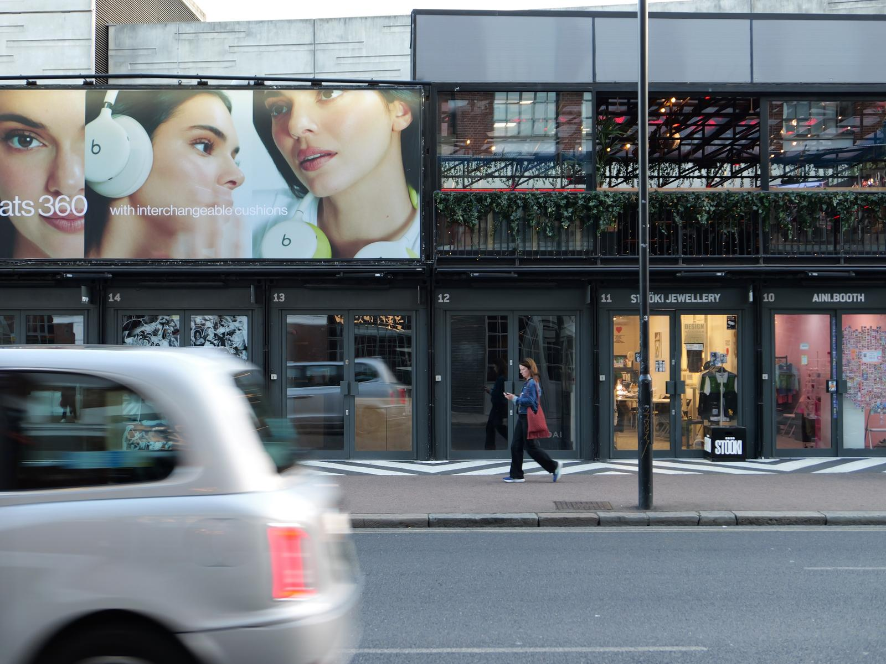

I finally decided to get a real camera again after years of relying on my phone.
I went for the Panasonic Lumix L10, and it seems promising so far, but there are definitely a lot of buttons and options to learn. I seem to have forgotten pretty much everything about how to use a camera!
I don’t necessarily think I will take better photos with this camera than my phone. I know I’m the limitation, not the camera. What I’m hoping for, though, is photos that look a little bit more like photos, without the phone magically compensating for everything. I also think it will make me a slightly more intentional photographer.
And, tbh, I like the idea of being the type of person who carries an actual camera around! 😅
See below for some photos from my commute this evening, with everything just on auto-auto. No edits or filters.
